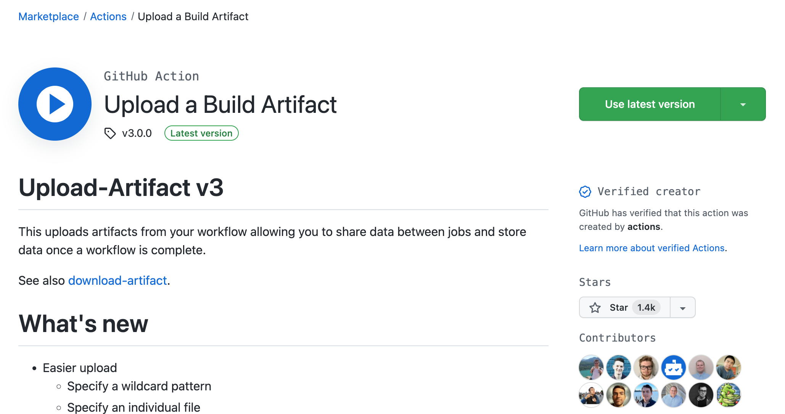

Primer ejemplo: Documentación en Antora
Introducción a Antora
Antora permite gestionar la documentación de un proyecto como si fuera código. Esto significa que el proceso de documentación se beneficia de las mismas prácticas utilizadas para producir software con éxito.
Algunas de estas prácticas son:
-
Almacenar el contenido en un sistema de control de versiones.
-
Separar el contenido, la configuración y la presentación.
-
Aprovechar la automatización para la compilación, validación, verificación y publicación.
-
Reutilización de materiales compartidos (DRY).
Antora ayuda a incorporar estas prácticas en el flujo de trabajo de documentación. Como resultado, la documentación es mucho más fácil de gestionar, mantener y mejorar.
Creación del repositorio
Para empezar a trabajar solo necesitas un repositorio alojado en GitHub de tipo público.
|
Las GitHub Actions funcionan tanto con repositorios públicos como privados. Sin embargo, otras funciones como las GitHub Pages solo funcionan con los repositorios públicos. |
En este repositorio subiremos el contenido de un proyecto de documentación en Antora.
-
Descomprimimos el archivo en un directorio
-
Entramos al directorio y hacemos
git init -
Creamos la rama principal
git checkout -b main -
Hacemos commit de todos los archivos con
git add -A && git commit -
Añadimos el remote de nuestro repositorio
git remote add origin <dirección-repositorio> -
Subimos la rama local
git push origin main`
Nuestro repositorio tiene que tener la siguiente estructura:
Creando el workflow para Antora
A continuación, vamos a añadir un workflow que construya nuestro proyecto en Antora.
Al tratarse de un proyecto basado en NodeJS, utilizaremos una imagen Docker con éste instalado y seguiremos un proceso de construcción común a éste tipo de proyectos.
|
Para más información sobre la construcción de proyectos Antora https://docs.antora.org/antora/latest/install-and-run-quickstart/ |
-
Crea un directorio
.github/workflows. -
En este directorio, crea un fichero llamado
build.yml. -
Copia el siguiente contenido YAML en el fichero anterior.
build.ymlname: CI on: (1) push: branches: [ main ] pull_request: branches: [ main ] workflow_dispatch: (2) jobs: build: # The type of runner that the job will run on runs-on: ubuntu-latest container: node:16-alpine (3) steps: - uses: actions/checkout@v2 - name: Install dependencies (4) run: npm install - name: Build Antora project (5) run: | cp -R node_modules/@antora/lunr-extension/supplemental_ui/* supplemental-ui/ (6) npx antora local-antora-playbook.yml --fetch (7)1 Se ejecuta al hacer push en la rama main o un pull request con destino main. 2 Podemos lanzar el workflow cuando queramos. 3 Utilizamos una imagen Docker con NodeJS 16 instalado. 4 Instalamos las dependencias del proyecto NodeJS. 5 Construimos el proyecto Antora. 6 Paso extra necesario al utilizar la extensión @antora/lunr-extension 7 Comando para construir la documentación Antora a partir del playbook. -
Hacemos
commitde los cambios y hacemospusha la rama remotagit add -A && git commit git push origin main
Podemos comprobar que todo se ha realizado correctamente, viendo el resultado de la acción.

Descarga de los artefactos (artifacts)
Hemos conseguido configurar un workflow que permite compilar la documentación en Antora cada vez que se hace un pull request, un push a main o de forma manual.
Sin embargo, no tenemos acceso a la página web que se construye.
Si queremos asociar la documentación a cada ejecución tenemos que hacer uso de un action que suba artefactos (artifacts).
-
Vamos al GitHub Actions Marketplace
-
Buscamos la palabra
artifact.
-
Seleccionamos
Upload a Build Artifactque es un action creado por GitHub. -
Buscamos como utilizar la action en su documentación.
-
Modificamos nuestro flujo
build.yml`con un paso extra.build.yml... # Uploads the generated site - uses: actions/upload-artifact@v3 with: name: docs (1) path: docs/ (2)1 Nombre del fichero zip que descargaremos. 2 Carpeta con la documentación. Por defecto Antora usa el directorio docs
Tras hacer un push o una pull request, se ejecutará el workflow y podemos descargar la documentación en el zip del final de la página.
Despliegue en GitHub Pages
Es un servicio de GitHub que ermite publicar paﾌ“inas en HTML estaﾌ》ico o en Jekyll.
Además proporciona un dominio y url puﾌ｜licas:
Podemos desplegar un sitio web mediante un directorio en el repositorio o con una rama especial (gh-pages).
Este servicio es usado normalmente para despliegue de frontends o portales de documentacioﾌ］ de repositorios, como el caso que nos ocupa.
-
Vamos a utilizar el action
Deploy to GitHub Pages. -
Leemos la documentación.
Si utilizamos un contenedor tenemos que tener instalado
gityrsyncpara usar esta action.- name: Install rsync and git run: | apt-get update && apt-get install -y rsync git # apk update && apk add rsync git - name: Deploy uses: JamesIves/github-pages-deploy-action@v4.2.5 -
Modificamos los pasos de nuestro flujo
build.ymlcomo primer y último pasobuild.ymlsteps: - name: Install git and rsync 📚 run: | apk update && apk add git rsync ... - name: Deploy 🚀 uses: JamesIves/github-pages-deploy-action@v4.2.5 if: contains(github.ref,'refs/heads/main') (1) with: branch: gh-pages (2) folder: docs (3) clean: true (4)1 Solo se ejecuta si hacemos push a la rama main. Evitamos modificar la rama gh-pagesal construir una pull request.2 La rama donde vamos a desplegar. 3 La carpeta que queremos desplegar. 4 Si queremos limpiar la rama para evitar que ficheros no existentes se queden en la rama. -
Hacemos commit y subimos los cambios.
-
Una vez se ha ejecutado la acción, configuramos el soporte para GitHub Pages. Entramos en
Settings > Pagesy seleccionamos la ramagh-pagescomo origen. -
En esta página podemos consultar la
urlde la documentación desplegada.
|
EJERCICIOS (Optativos)
|